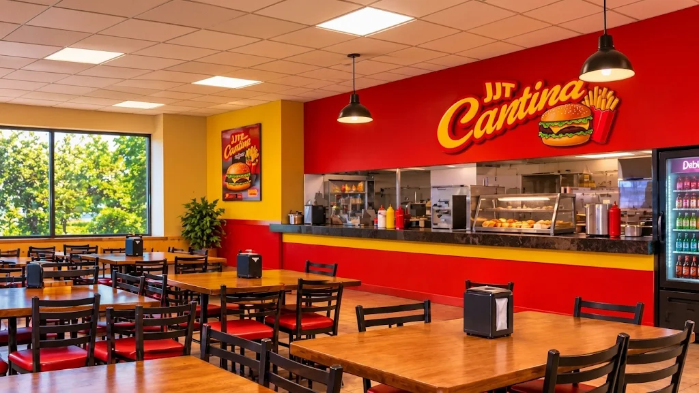
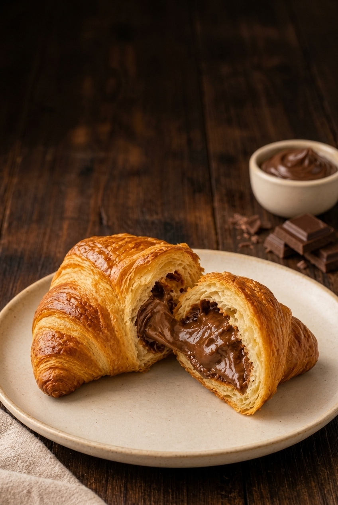
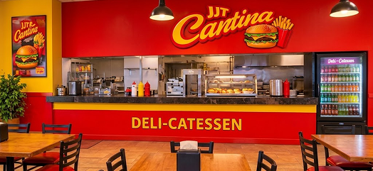

Lanches e doces deliciosos!

A JTT Cantina do SENAI Jandira oferece praticidade e sabor no dia a dia dos alunos, professores e funcionários, com opções de lanches e bebidas para aproveitar os intervalos e recarregar as energias!
